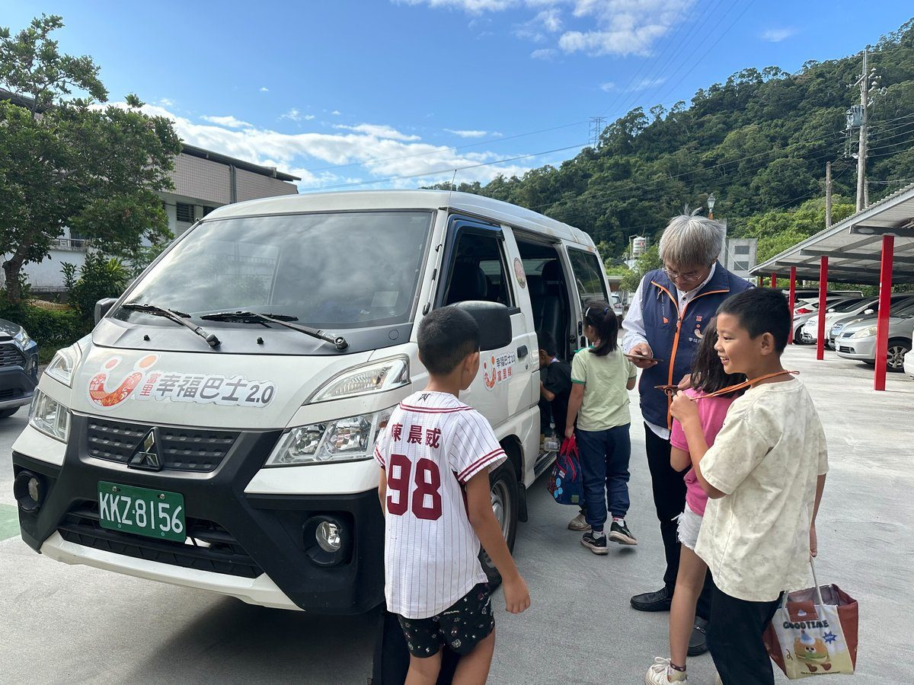
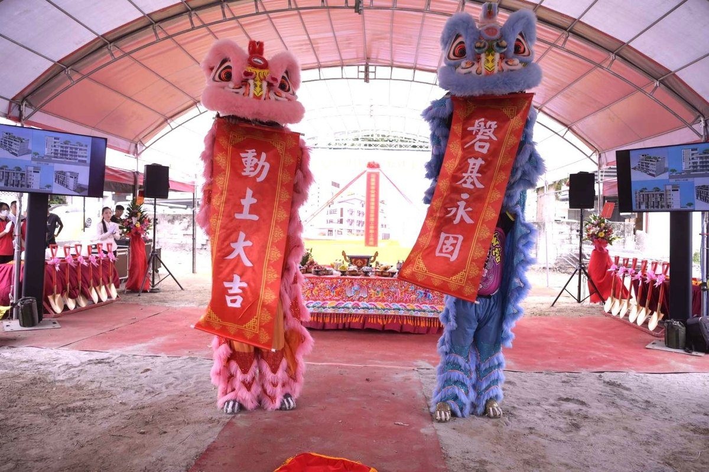
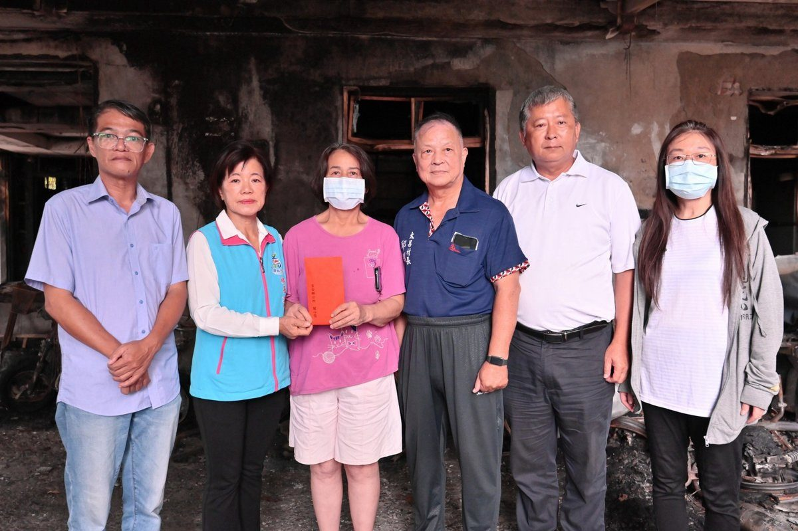

寒冬前夕送暖！吉安鄉號召十方善意 游淑貞親送千戶身障物資與冬衣
花蓮吉安鄉公所攜手在地10家宮廟、慈善基金會及中華民國紅十字會，整備1,000份日常生活物資與保暖衣物，專程發放給鄉內1,000戶身障弱勢家庭。活動現場規劃時段分流與貼心搬運服務，並結合健保APP推廣、高齡防災宣導與國軍…
閱讀全文 →花蓮吉安鄉公所攜手在地10家宮廟、慈善基金會及中華民國紅十字會，整備1,000份日常生活物資與保暖衣物，專程發放給鄉內1,000戶身障弱勢家庭。活動現場規劃時段分流與貼心搬運服務，並結合健保APP推廣、高齡防災宣導與國軍…
閱讀全文 →
吉安子弟葉峻銘於2026名古屋亞運首度參賽即勇奪卡巴迪團體銅牌！歷經國訓中心兩年高強度訓練與賽事低潮，他憑藉極致自律與狂熱執著突破重圍。吉安鄉公所團隊特別前往其家中頒贈游淑貞鄉長賀榜，肯定他為國爭光，並期許未來再創體壇佳…
閱讀全文 →
民眾前往合歡山旅遊，行經台8線117.5公里處時車輛水箱突然破裂拋錨，面臨高山受困危機。新城警分局合歡派出所警員林宏良接獲求助後迅速趕抵現場，熱心協助補給水源並檢查狀況，讓受困民眾得以在天黑降溫前平安駕車下山。警方特別提…
閱讀全文 →
花蓮慈濟醫院急診部護理長蕭琦諭深耕東臺灣第一線急救十多年，歷經0206強震、太魯閣號事故與0403大地震等嚴峻考驗。她將血淚應變經驗轉化為系統化制度，更帶領團隊建立災難醫療站，卓越的公共服務精神讓她榮獲第64屆十大傑出青…
閱讀全文 →
九九重陽節前夕，吉安鄉公所攜手花蓮縣政府社會處深入社區，探訪仁里村103歲楊錦長與光華村102歲夏宗澤兩位百歲人瑞。現場致贈薄毯、禮金及總統府金鎖片，展現縣鄉協力關懷長者的具體行動。吉安鄉長游淑貞強調，將持續完善在地安老…
閱讀全文 →
吉安鄉公所舉辦第四屆繽紛吉安客話講故事比賽，幼兒園與國小低年級學童以自信童音生動詮釋經典繪本。鄉長游淑貞倡導家庭即教室，透過親子共讀與祖孫對話，讓客語文化在日常生活深耕發芽，傳承母語生命力。…
閱讀全文 →
吉安在地龍舟好手吳嘉華於2026 ACC亞洲龍舟錦標賽團體公開男子組200公尺強勢奪金！深耕在地十多年的他從鯉魚潭自主訓練起步，過關斬將選上國手並首度出國即為國爭光。吉安鄉公所特別前往府中張貼紅榜致賀，承諾持續做基層體育…
閱讀全文 →
花蓮畢士大教養院盛大舉辦愛心園遊會，現場匯集近70個在地美食與手作市集攤位，湧入滿滿熱情鄉親！吉安鄉長游淑貞延續數十年關懷弱勢初衷，攜手幼教界夥伴深耕在地公益。活動募得經費將全力挹注身障院生之復健訓練與日常照護，攜手打造…
閱讀全文 →
花蓮縣「2026玩藝列車—國際藝術下鄉」巡演最終站於吉安鄉阿美族文化館熱鬧登場！義大利與阿根廷國際團隊帶來絕妙雜耍與音樂喜劇，吉安鄉長游淑貞陪伴鄉親近距離感受國際表演魅力。吉安鄉持續結合縣府與民間資源，推動藝文深耕社區，…
閱讀全文 →
花蓮吉安鄉公所於那荳蘭部落聚會所舉辦文化健康站聯合成果展，匯聚10個文健站共350位部落長者。活動透過非洲鼓表演、健康操帶動、套圈圈闖關與靜態手工作品展出，展現銀髮族豐沛的學習能量與樂齡活力。鄉長游淑貞親臨現場以族語致詞…
閱讀全文 →
花蓮縣道193線53K至55K段（箭瑛大橋至臺11甲段）因應樺加沙颱風災後復建路面刨鋪工程，將於115年10月21日至30日實施全天雙向封閉管制。花蓮縣政府提醒用路人提前規劃改道替代路線，當地住戶依交維引導通行，預計10…
閱讀全文 →
花蓮「花得開心購物節」盛大啟動！單筆消費滿300元，就有機會抽中iPhone 17 Air、LG蒸氣電子衣櫥、高階智慧手機及多達3萬元現金等總值破百萬元的豪華大獎。活動期間10/23至11/1，快來花蓮旅遊購物，體驗掏錢…
閱讀全文 →
花蓮縣警察局新城分局打破傳統訓練模式，將新興運動匹克球納入常年訓練課程並闢建專屬場地。在花蓮縣警察之友會新城辦事處贊助球具資源下，分局長賴楷淳與警友會副主任簡瑀萱親自開球，鼓勵同仁規律運動紓解勤務壓力，提升警力團隊向心力…
閱讀全文 →10/16 – 10/22 本週運勢精華指南。🌌 本週星象提示：太陽與木星交會，帶來溫暖的直覺與創造力。適合嘗試新事物，給自己一份放鬆的小禮物！。本週太陽與木星交會，帶來溫暖直覺與創造力。十二星座運勢詳情、焦點星座天秤座…
閱讀全文 →
因中央公路局補助計畫核定延宕，花蓮萬榮鄉與富里鄉幸福巴士2.0面臨資金斷糧危機。花蓮縣政府主動盤點預算，於10月13日緊急撥款給馬遠及羅山社區發展協會，成功維持偏鄉就醫就學逾3000人次交通服務不中斷，並呼籲中央提升審查…
閱讀全文 →
花蓮縣吉安鄉健康園區新建工程正式動土！獲中央核定1.25億元，規劃興建4層樓複合式建築，整合智能衛生所、複合門診與45人日間照顧中心。園區將提升20%篩檢量能，提供一站式醫療長照服務，守護在地長輩健康。…
閱讀全文 →
花蓮縣「大山大海．花現未來」永續風格展將於11月14日至21日在花蓮縣運動休閒園區盛大登場！展覽以7大在地動物為引路人，開闢A棟硬核科技與H棟軟實力雙展館，搭配草地音樂會、免費療癒野餐日、風格市集與山海集章扭蛋禮，邀請全…
閱讀全文 →
花蓮縣吉安鄉民宅14日晚間爆發嚴重火警，猛烈火勢自一樓延燒至加蓋鐵皮層，一名簡姓男子受困三樓一度OHCA，經送往花蓮慈濟醫院搶救後幸運恢復生命跡象。吉安鄉長游淑貞緊急率團隊與慈善團體前往慰問安撫受災戶，發放急難慰問金並啟…
閱讀全文 →
吉安鄉立幼兒園15位幼兒組成代表隊，將於10月17日出征全國客家藝文競賽初賽，14日舉辦客語戲劇《打幫打伙》彩排預演，吉安鄉長游淑貞讚許師生用心扎根母語，期勉學童自信登台爭取佳績。…
閱讀全文 →
吉安鄉公所即日起辦理116年度社會救助總清查，清查低收、中低收、身障及兒少等近四千案，鄉長游淑貞力推資訊系統主動比對與臨櫃分流便民措施，全面落實弱勢照顧與資源公平。…
閱讀全文 →